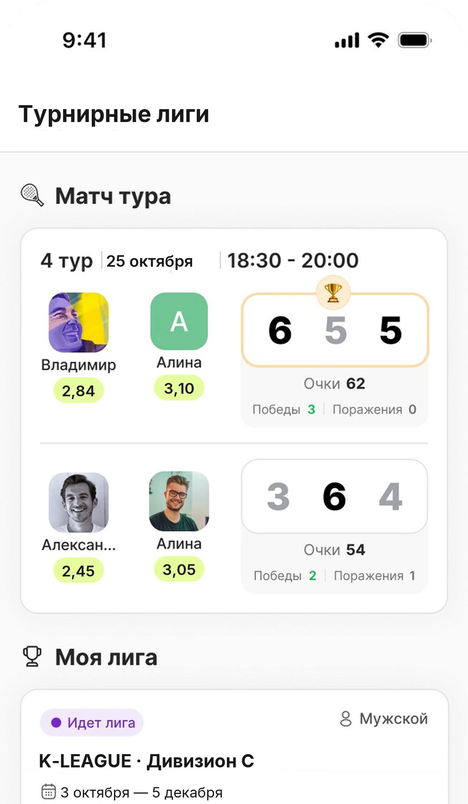
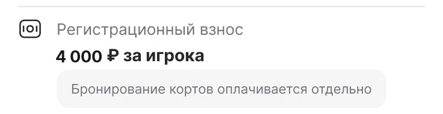
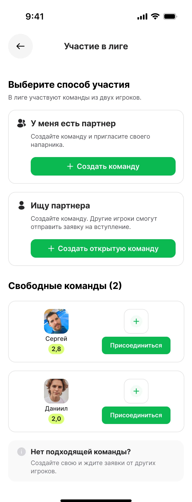
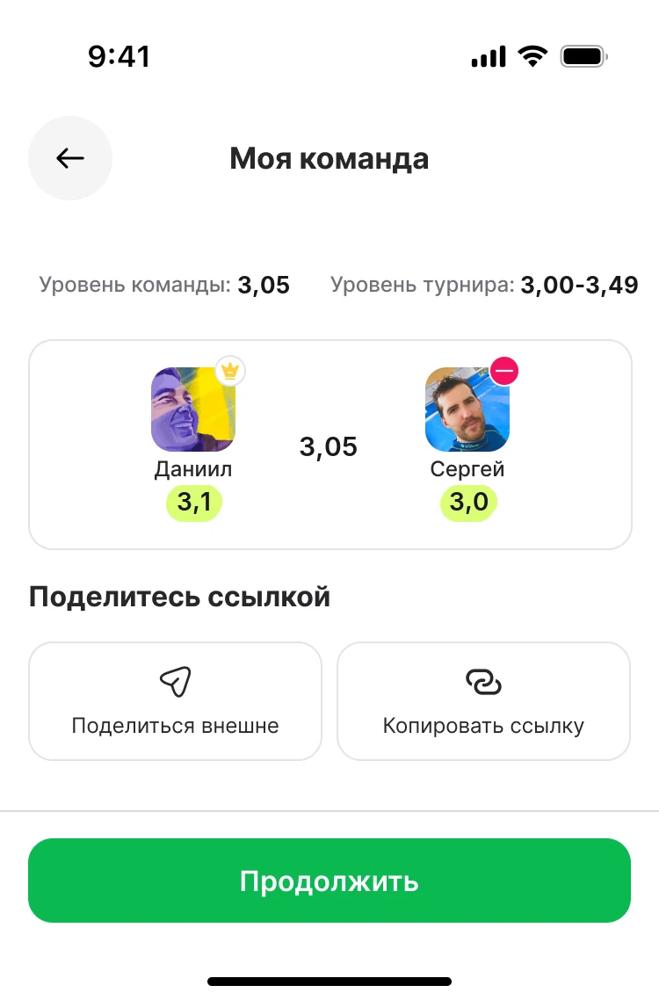
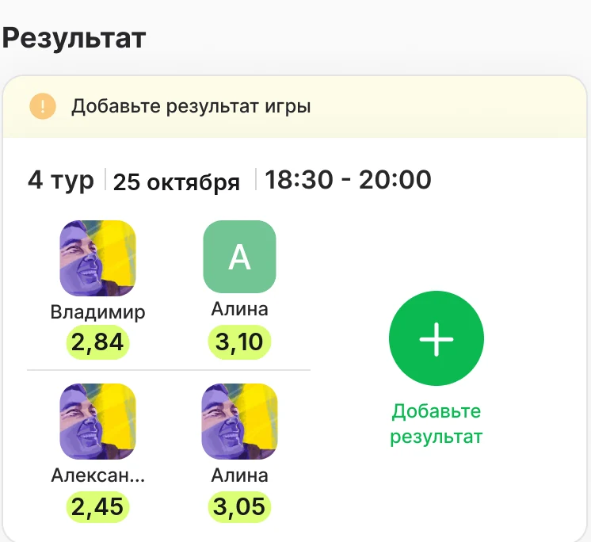
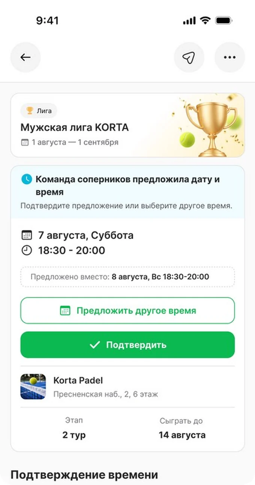

Установите Korta и войдите
Приложение бесплатное, есть в App Store и Google Play. Вход по электронной почте: вводите адрес, получаете код письмом. Пароль придумывать не нужно.
Ссылки на магазиныВесь путь по шагам: где найти лигу, как собрать команду, кто назначает матч и что происходит после игры. Гид для тех, кто ещё ни разу не открывал Korta.
Пока без денег и обязательств — просто заводим профиль и смотрим, какой дивизион ваш.
Приложение бесплатное, есть в App Store и Google Play. Вход по электронной почте: вводите адрес, получаете код письмом. Пароль придумывать не нужно.
Ссылки на магазиныНесколько вопросов об опыте и других ракеточных видах. На выходе — уровень Korta по шкале от 1,0 до 5,0. Он определяет дивизион и уточняется по сыгранным матчам.
Что означают уровниНижнее меню приложения, вкладка «Турниры» — экран «Турнирные лиги». Там четыре дивизиона K‑LEAGUE: D, D+, C и C+. Ваш — тот, в диапазон которого попадает ваш уровень; в остальные приложение просто не пустит.

Играют парами. Напарника можно привести своего, найти в приложении или дождаться, пока найдут вас.
Кнопка внизу страницы дивизиона. Она открывает экран «Участие в лиге» — дальше всё происходит там.
Напарника можно найти по имени в поиске или позвать ссылкой — «Поделиться внешне» отправит её в любой мессенджер. Если у человека ещё нет Korta, по этой же ссылке он поставит приложение и попадёт сразу в вашу команду.
Тот, кто создал команду, — капитан. Он предлагает и подтверждает время матчей и вносит счёт.
Взнос за сезон — 8 000 ₽ с команды. В приложении он делится пополам: каждый игрок платит свою половину со своей карты. Команда считается заявленной, когда оплатили оба.

Аренда корта в эту сумму не входит — её платят перед каждым матчем.


Соперник на тур известен заранее. Всё остальное — когда, где и каким счётом — решаете вы вчетвером.
В карточке матча капитан любой из команд предлагает дату и интервал. Капитан соперника нажимает «Подтвердить» или «Предложить другое время». Время согласовано, когда обе команды подтвердили один и тот же интервал.
У каждого тура есть срок — он виден в карточке матча как «Сыграть до».
Как только прозвучало первое предложение — дата, время и клуб, — мы резервируем в этом клубе корт. Клуб подтверждает бронь обычно за 15 минут, в редких случаях дольше — статус виден в приложении.
Стоимость корта делится на четверых. Каждый игрок оплачивает свою долю в приложении, все четыре доли — до начала матча.
Матч — 90 минут. После игры капитан открывает карточку матча и нажимает «Добавьте результат», капитан соперника подтверждает. Если счёт записан неверно — его можно оспорить, разбирается организатор.

Подтверждённый счёт сразу двигает команду в таблице дивизиона: победа — 3 очка, поражение со взятым сетом — 1, поражение — 0. Матчи лиги учитываются и в вашем личном уровне Korta.

Нижнее меню. Список лиг, матч ближайшего тура и карточка вашей лиги.
Вкладки «Информация», «Расписание лиги», «Турнирная сетка», «Результаты» и «Статистика» — это и есть таблица.
Согласование времени, бронь корта, оплата доли, чат четырёх игроков и ввод счёта.
Состав, уровень команды, ссылка-приглашение для напарника.
Общий чат дивизиона — на странице лиги, чат матча — в его карточке. Договорённости о клубе и переносах фиксируйте там.
Все правила сезона — от дивизионов до спорных ситуаций.
ОткрытьКоротко. Полные формулировки — в регламенте, ссылки на нужные пункты стоят рядом с ответами.
Не нашли свой вопрос — напишите в Telegram @Danii1_S или на hello@korta.me. Отвечаем и помогаем собрать команду.
Приложение Korta, уровень (появляется после короткого опроса при регистрации), напарник или открытая команда и оплаченный взнос. Регистрация открыта до 1 октября. Пункт 2
Да, и это обычный случай. Выберите «Ищу партнёра» и создайте открытую команду — вас найдут. Или присоединитесь к чужой свободной команде: заявка уйдёт капитану, он её примет.
Дивизион D — как раз для тех, кто вышел на корт впервые. Но лига это семь матчей за восемь недель, поэтому одну‑две игры до старта сыграть стоит: разберётесь со стенами и счётом. Гид для первой игры
В тот, в диапазон которого попадает ваш уровень Korta на момент регистрации. Приложение не даст записаться в чужой дивизион — ни вам, ни напарнику. Уровни Korta
До закрытия регистрации — да, через организатора: команда снимается с текущего дивизиона с возвратом взноса и регистрируется заново. После публикации расписания перевод невозможен. Пункты 2.9–2.10
До закрытия регистрации — да. Если видно, что реальный уровень пары заметно выше или ниже заявленного, мы свяжемся с капитаном и предложим другой дивизион. Об изменении вы узнаете до первого тура.
«Участвовать» → «У меня есть партнёр» → «Создать команду». Дальше приглашаете напарника: поиском по имени или ссылкой в мессенджер.
Отправьте ему ссылку кнопкой «Поделиться внешне». Он поставит приложение, войдёт по почте и попадёт сразу в вашу команду — искать лигу отдельно не нужно.
Капитан — тот, кто создал команду. Он предлагает и подтверждает время матча, вносит и подтверждает счёт. Партнёр может отмечать в карточке удобное время, но отправляет предложение капитан. Пункт 2.1
До 1 октября — да, через организатора: он снимает партнёра с команды, вы приглашаете нового. После закрытия регистрации состав фиксирован, замены не предусмотрены. Пункты 9.1–9.2
Команда не считается заявленной: пока взнос не оплачен обоими, место в дивизионе не подтверждено. До оплаты место резервируется на 30 минут. Пункт 2.6
Капитаны. Один предлагает дату и интервал, другой подтверждает или предлагает своё. Пока корт не забронирован, предложить другое время может любая команда. Пункты 5.1–5.2
Корт бронирует Korta — сразу после первого предложения времени, в том клубе, который капитан указал вместе с датой и временем. Про клуб удобно договориться заранее в чате матча: после брони его уже не поменять. Пункты 5.3–5.4
Корт бронируется на 90 минут, включая разминку. Формат — два сета до шести геймов, при 6:6 тай‑брейк до 7 очков, при 1:1 по сетам — решающий матч‑тайбрейк до 10. В гейме играется «золотое очко»: на 40:40 разыгрывается одно решающее очко. Пункт 6
Пока корт не забронирован — просто предложите новое время в пределах срока тура. После брони перенос возможен только по взаимному согласию и через отмену брони. Если договориться не выходит, нажмите «Не можем играть» — матч передаётся организатору. Пункт 8
Напишите организатору. Если команда не подтверждает и не предлагает встречное время 48 часов при двух предложениях в разные дни — это считается уклонением, и организатор вправе засчитать техническое поражение. Пункт 8.4
После игры капитан вносит счёт в карточке матча, капитан соперника подтверждает — до воскресенья 22:00 той недели, в которую сыгран матч. В таблицу счёт попадает только после подтверждения. При несогласии счёт оспаривается: спор разбирает организатор и отвечает в течение трёх рабочих дней. Пункты 7 и 11
8 000 ₽ с команды за весь сезон. В приложении сумма делится пополам — каждый игрок платит свою половину со своей карты. Аренда кортов в неё не входит. Пункт 2.6
Стоимость корта делится на четыре равные доли, каждый платит свою в приложении. Все четыре доли должны быть оплачены до начала матча — иначе команде неоплатившего грозит техническое поражение. Пункт 5.5
До закрытия регистрации 1 октября — да, полностью. После — взнос не возвращается. Если в дивизионе не набралось восьми команд, мы его не проводим и возвращаем взносы всем. Пункты 2.7 и 9.3
Организация сезона: расписание и соперники по уровню, бронь кортов, ведение таблицы, разбор спорных ситуаций, день открытия и K‑Day с награждением призёров. Мячи команды приносят сами.
Напишите в Telegram или на почту — ответим и поможем собрать команду. Регистрация в K‑LEAGUE открыта до 1 октября, старт сезона — 3 октября.